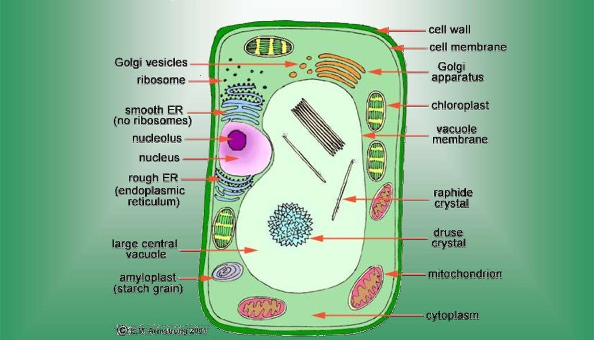
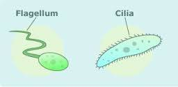

These are large cell organelles, characteristic of plant cell. These may contain pigments that provide colour to the cell. The green-coloured plastids are called chloroplast. They manufacture food for green plants by the process of photosynthesis. The plastids, associated with the different coloured parts of the plants are called chromoplast. They are responsible for imparting colour other than green to the different parts of the plant. Plants also contain some colourless plastids called luceoplast, these provide space to store starch,proteins,oils,etc.
These are rod shaped or spherical structures. They are present in large numbers in cells engaged in different physiological activities. They are responsible for cellular respiration and for generation of energy for different activities of life. Hence, they are also called powerhouse of the cell.
It is a network of membranes. It provides channels of transport of materials in a cell. ER is of two types:
This type of ER has a rough apperance as it id studded with ribosomes. It plays a vital role in synthesis of proteins.
This type of ER does not have ribosomes attached to it; it,therefore has a smooth apperance. It helps in synthesis of fats.
They are sac-like structures stacked one above the other. They are involved in processing and packaging of materials produced by the cell wall.
It appears as an empty space in the cytoplasm. It is generraly large in the plant cells. It stores excess of water and waste products.
They are tiny granules present in the cytoplasm and on the rough ER. They help in protein syntheis.
Some cells have these small extension on their cell membrane. They help in locomotion and collection of food. Unicellular organisms like paramoecium have nymerous cilia while euglena has a single flagellum.
 